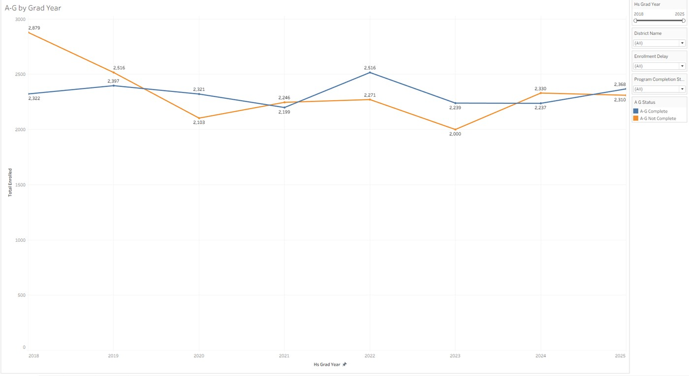
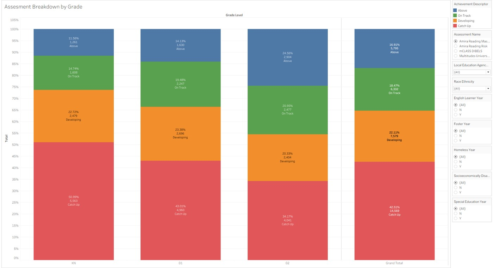
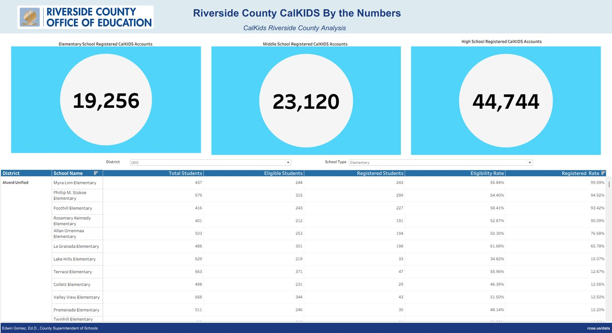

Professional Work
Education Accountability Analytics
Tableau dashboards covering student growth, A-G completion, reading assessments, and CalKIDS participation, built to support school-, district-, and subgroup-level comparisons across 23 school districts ahead of state accountability reporting.
- 450,000+ student records validated
- 23 school districts
- 4 dashboard workbooks
Tools used:
Context
The Riverside County Office of Education (RCOE) supports accountability and assessment reporting for school districts across the county. Districts and schools rely on state and internal data, including student growth models, A-G course completion, reading-assessment results, and CalKIDS college-savings account participation, to track outcomes and meet state reporting requirements.
This was internal accountability-and-assessment analytics work for RCOE, supporting district and school administrators, not a personal research project. The underlying data (state growth-model files, district enrollment records, assessment results) belongs to RCOE and the districts it serves.
Business & reporting need
Ahead of accountability reporting, RCOE needed reliable, comparable dashboards spanning four distinct areas (student growth, A-G completion, reading assessment, and CalKIDS participation) that district and school staff could filter by county, school, district, grade level, and student subgroup, rather than working from static state spreadsheets.
My role
- Developed the four Tableau dashboard workbooks (Growth Exploration, A-G Status, Reading Overview, and CalKIDS Overview) enabling school-, district-, and subgroup-level comparisons across 23 school districts.
- Performed exploratory and statistical analysis while validating 450,000+ student records to identify trends, missing values, duplicates, and reporting inconsistencies prior to accountability reporting.
- Delivered ad hoc analyses and presented findings to stakeholders, incorporating their feedback into dashboard revisions and evolving reporting requirements.
The underlying accountability metrics (growth model, A-G, assessment definitions) are set by the state and by RCOE's data governance, not by me. My part was building the dashboards, validating the data feeding them, and adapting them to stakeholder feedback.
Data & reporting scope
| Dashboard | Covers | Data source |
|---|---|---|
| Growth Exploration | ELA & Math growth scores by school/district | CDE growth model download |
| A-G Status | A-G completion by grad year, district, community college | District enrollment summaries |
| Reading Overview | Reading assessment results by grade, race/ethnicity, demographics | Internal assessment fact tables |
| CalKIDS Overview | Account registration & eligibility by school/district | CalKIDS enrollment extract, CDE school list |
In total, more than 450,000 student records were validated across these sources before being surfaced in the dashboards, checking for missing values, duplicate student identifiers, and inconsistencies ahead of reporting. All dashboards operate on de-identified, aggregate counts by school, district, or subgroup; no individual student-level data is shown here.
Approach
- Source raw data: state growth-model files, district enrollment summaries, assessment fact tables, CalKIDS extracts
- Validate records: check for missing values, duplicates, and inconsistencies
- Build four Tableau workbooks with filters for county, school, district, grade, and student subgroup
- Present dashboards to stakeholders and incorporate feedback into revisions
Visuals
Visuals below are RCOE accountability dashboards, shown as originally produced, using aggregate school- and district-level counts only.

School-level ELA/Math growth performance, filterable by county, school, student group, and accountability status. Built to let administrators see which schools are accelerating, average, or falling behind at a glance.
{kind=link}

Total enrolled students meeting versus not meeting A-G course requirements, tracked by graduation year from 2018–2025 and filterable by district. Used to spot multi-year completion trends rather than a single snapshot.
{kind=link}

Reading achievement levels by grade band, filterable by assessment instrument, district, race/ethnicity, and student demographics (English learner, foster, homeless, socioeconomically disadvantaged, special education), supporting subgroup-level accountability comparisons.
{kind=link}

CalKIDS college-savings account registration and eligibility, broken down by school level and filterable to the individual school. Built to help districts identify schools with an eligibility/registration gap worth following up on.
Results & operational value
450,000+ student records validated and organized into four Tableau dashboards that enabled school-, district-, and subgroup-level comparisons across 23 school districts ahead of accountability reporting.
These figures describe the scope and structure of the reporting work: record counts validated, districts covered, dashboards delivered. Chart values shown (growth scores, completion counts, registration rates) are the dashboards' own outputs as of the data snapshot used; they are not restated here as broader conclusions beyond what each chart displays.
Presenting the dashboards directly to stakeholders and incorporating their feedback shaped multiple revisions, keeping the reporting aligned with how districts actually needed to slice the data for their own accountability submissions.